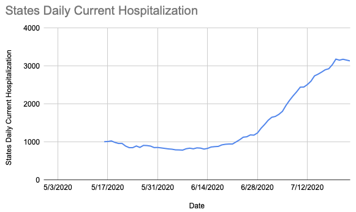
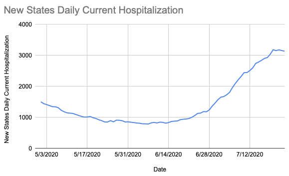
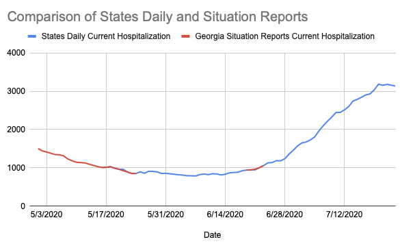

[GA] Georgia situation reports have hospitalization data back to 1 May
State or US: GA
Describe the problem The COVID Tracking Project’s current hospitalization data for Georgia goes back to 16 May. However, Georgia’s Situation Reports began including this number starting on 1 May. Once 16 May comes around, the numbers in these reports exactly matches CTP’s number.
The exception is that there are two days after 16 May where CTP retained the previous day’s current hospitalization: 21 May and 21 June but the Situation Reports have a new value. There’s no documentation of what happened 21 May, but on 21 June Georgia’s dashboard wasn’t working during the data entry shift and the other columns Georgia reports were backfilled later.
Link to data source https://gema.georgia.gov/document/document/sitrep-320-723/download
MattHilliard added the label Data quality on July 25, 2020 at 3:57 am
MattHilliard closed the issue on July 25, 2020 at 4:05 am
I have a spreadsheet with the old States Daily column, numbers from the Situation Reports, and the new column. I didn’t pull in all the numbers from the Situation Reports, just the ones we were missing (5/1 - 5/15, 5/21, and 6/21) and a few overlapping days where applicable to demonstrate the data source is perfectly aligned with our existing data.
Before: 
After: 
Overlaid data: 